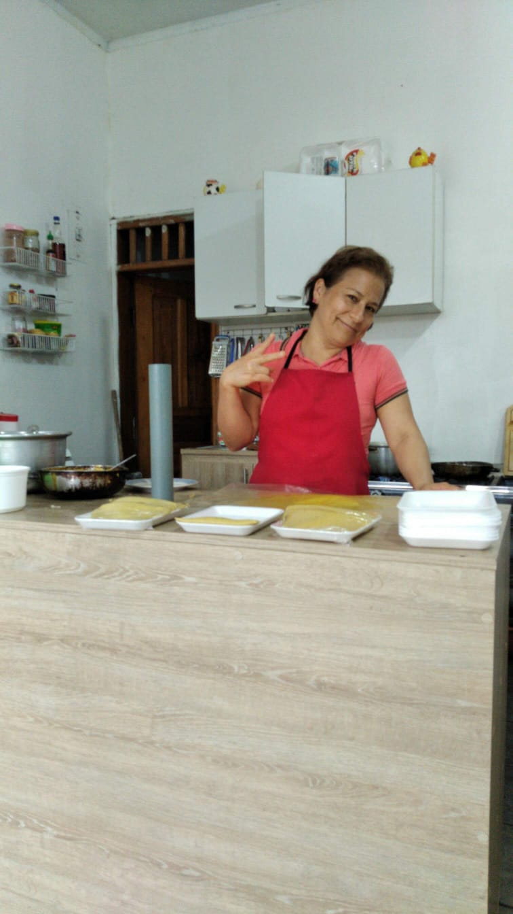

Conoce nuestra historia
En la ciudad de Santo Domingo de los Tsáchilas, específicamente en el sector El Colono, se encuentra el Restaurante D'Lucdy, un emprendimiento dedicado a compartir el auténtico sabor de la gastronomía manabita.
Nuestra historia nace del deseo de compartir el sabor de la comida tradicional, aquella que recuerda los almuerzos preparados en casa, con dedicación, cariño y recetas llenas de identidad.
Con esfuerzo y entusiasmo, este proyecto busca ofrecer a sus clientes una experiencia gastronómica agradable, donde cada almuerzo represente una oportunidad para disfrutar del sazón manaba.
Actualmente, D'Lucdy continúa fortaleciendo su propuesta gastronómica, destacando el valor de la tradición, la buena atención y el compromiso con sus clientes.

Nuestra esencia manabita
En D'Lucdy creemos que la gastronomía representa mucho más que preparar alimentos. Es una manera de conservar nuestras costumbres y compartir momentos especiales.
Por eso, nuestros almuerzos buscan transmitir el sabor tradicional de Manabí, destacando preparaciones reconocidas dentro de nuestra cultura ecuatoriana.

Nuestra misión
Ofrecer almuerzos con auténtico sazón manaba, promoviendo la gastronomía tradicional mediante preparaciones de calidad, atención cordial y un ambiente agradable.
Nuestra visión
Consolidarnos como un restaurante reconocido en Santo Domingo por el sabor de nuestros almuerzos, el buen servicio y la conservación de nuestras tradiciones gastronómicas.
Nuestros valores
- Responsabilidad: compromiso con nuestros clientes.
- Calidad: dedicación en cada preparación.
- Tradición: conservación del sazón manaba.
- Respeto: atención cordial y amable.
- Pasión: amor por nuestra gastronomía.
Descubre la gastronomía manabita
Te invitamos a conocer más sobre la gastronomía de Manabí, sus tradiciones y sus preparaciones.
Video informativo sobre la gastronomía tradicional de Manabí.
¿Dónde nos encontramos?
Ciudad: Santo Domingo de los Tsáchilas.
Sector: El Colono.
Visítanos y disfruta de nuestros almuerzos con sazón manaba.
Ver información de contacto